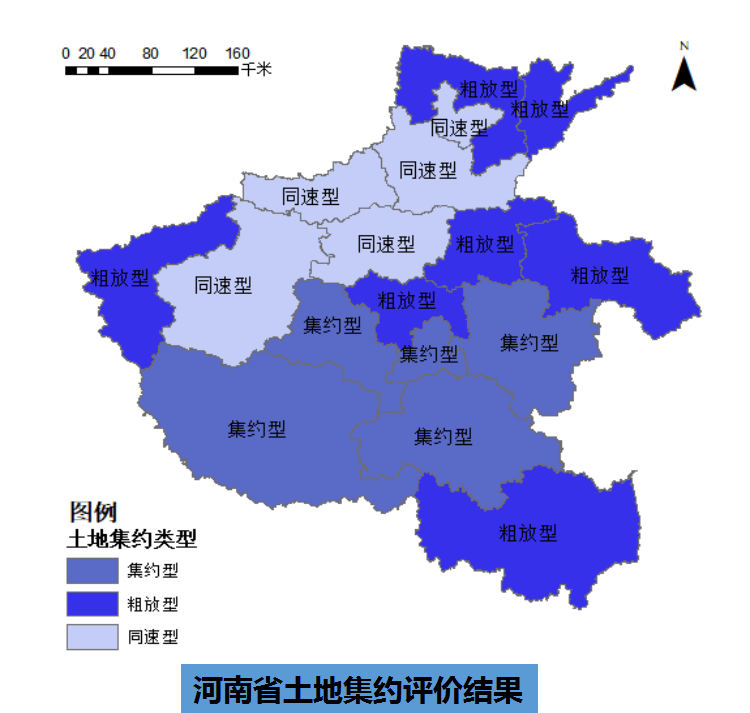
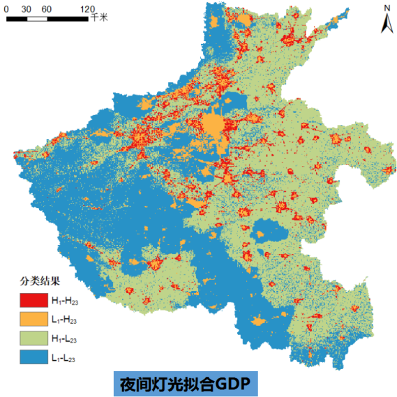
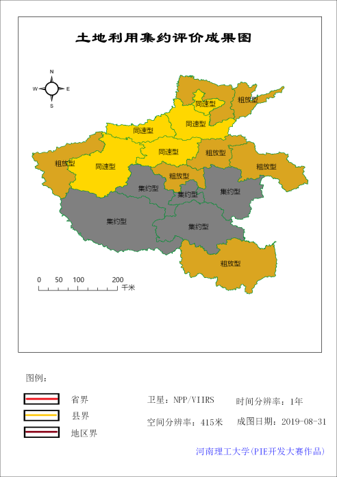
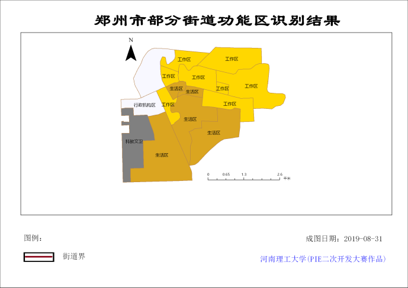

河南理工大学 触摸阳光队
荣获“航天宏图杯”PIE遥感图像处理软件二次开发大赛特等奖
作品名称：基于夜光遥感的城市发展模拟平台
团队简介：程钢（指导老师）、李岩林（组长）、王敬宇、张清兰、于澎峰、任梦云
作品简介：
系统平台在综合借鉴夜光遥感在城市发展研究中的理论和方法的基础上，利用 PIE开发平台集成了夜光遥感模拟城市发展的相关功能，形成了一套比较完善的夜光遥感模拟城市发展的功能体系，为夜光遥感与城市发展研究提供了更具针对性的扩展。主要包括常用功能、矢量处理、基础工具、图像处理、建模分析、综合判读、动态展示、专题制图等功能模块。从城市扩张、城市空间布局、城市经济人口变化及城市土地利用等方面对城市的发展进行了多方位模拟。
作品评价：
基于piesdk和matlab相结合的功能应用，系统提供了一个完整的基于夜光数据的城市发展模拟案例，功能完备，思路清晰，能够很好的应用在对城市发展情况的分析应用实践中。参赛队员对城市建模分析方面的算法研究较深入，对行业应用有指导价值。
精美截图：
 